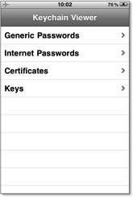

Zum Online-Shop
Zum Online-Shop
6.5 Sicherheit in der iOS-API
Auf die Sicherheit von iOS selbst können Sie als Programmierer keinen Einfluss nehmen. Sie können aber die vom Betriebssystem zur Verfügung gestellten Sicherheitsmechanismen nutzen, um Ihre App und die von ihr verarbeiteten und abgespeicherten Daten gegen unbefugten Zugriff zu sichern. Das Betriebssystem stellt Ihnen dazu zwei elementare Mechanismen zur Verfügung. Der eine Mechanismus ist die Keychain, in der Sie sensible Daten wie z. B. Passwörter und Benutzerkennungen ablegen können und sollten.
Der zweite Mechanismus ist die Verschlüsselung von Dateien über entsprechende Attribute. Sowohl die Keychain als auch die Verschlüsselung der Dateien sind mit dem Benutzercode des Anwenders verknüpft. Einen hinreichend starken Code vorausgesetzt, lassen sich Daten auf dem iPhone angemessen schützen.
6.5.1 Keychain
Die Sicherheit der Keychain resultiert aus einem mehrstufigen Verschlüsselungskonzept. Jede Tabelle – die Keychain legt Daten in Form relationaler Datenbanktabellen ab – besitzt eine verschlüsselte Spalte, in der die verschlüsselt abzulegenden Daten liegen. Diese Daten sind mit einem gerätespezifischen Schlüssel versehen, der den transparenten Zugriff auf die Daten auf das jeweilige Gerät beschränkt. Ein Angreifer, der sich der Datenbankdaten der Keychain bemächtigt, kann die Verschlüsselung (AES 128) außerhalb des Gerätes nicht brechen. Die Keychain ist also grundsätzlich dagegen geschützt, von einem Gerät extrahiert und per Brute-Force-Angriff, beispielsweise mit einem GPU-Cluster oder einer leistungsfähigen Cloud, dechiffriert zu werden. Nichtsdestotrotz besteht die Gefahr, dass ein Angreifer auf einem Gerät mit Jailbreak oder über eine Sicherheitslücke im iOS Zugriff auf die Keychain bekommt und unbefugt Daten ausliest.
Daher ist die Keychain ab iOS 4 zusätzlich zum Geräteschlüssel noch mit dem Benutzercode des Anwenders verschlüsselt. Das heißt, der Zugriff auf die verschlüsselten Daten ist nur möglich, wenn der Anwender den Benutzercode beim Entsperren des iPhones eingegeben hat. Das schützt neben dem oben genannten Angriffsvektor der Extraktion der Keychain vom Gerät auch gegen den Angriffsvektor, dass sich ein Unbefugter auf dem Gerät selbst Zugriff auf die Keychain verschafft, um Daten auszulesen.
| Die Bedeutung des Benutzercodes in iOS |
|
Der Benutzercode, mit dem ein Anwender sein iPhone gegen unbefugten Zugriff schützen
kann und der dem Passwort von Desktop-PCs entspricht, hat dem Konzept der Keychain
zufolge nicht nur die Aufgabe, das Gerät vor unbefugtem Zugriff zu schützen, sondern
fließt auch in die Verschlüsselung sensibler Daten mit ein. Daher ist es dringend
angeraten, immer einen Benutzercode zu verwenden. Je nach Schutzbedarf ist die Verwendung
des standardmäßig auf vier Zahlen eingestellten Benutzercodes nicht ausreichend. Dann
sollte ein komplexerer und längerer Benutzercode zum Einsatz kommen. Wenn Sie als
App-Entwickler im Auftrag eine App für die Verarbeitung sensibler Daten erstellen,
sollten Sie Ihren Auftraggeber auf diesen Umstand hinweisen. Gerade im Unternehmens-Einsatz
ist die Verwendung starker Passwörter nicht unüblich.
|
Die Keychain kennt vier Arten von Informationen:
Generic Passwords ist die Klasse für App-Programmierer, die Kombinationen aus Benutzername und Passwort sicher ablegen möchten (Key-Value-Paare). Internet Passwords ist der Speicher für Systemdienste von iOS, z. B. das Mail-Programm oder Safari. Dort liegen die Zugangsdaten zu Mailkonten, Exchange-Server, Anmeldedaten für Webseiten etc. In der Klasse Certificates speichert iOS alle Zertifikate ab, die der Benutzer auf das Gerät bringt, also z. B. S/MIME oder VPN-Zertifikate. Keys ist ein Systembereich, mit dem man als App-Programmierer keine Berührung hat.
Jede App darf nur auf die Keychain-Einträge zugreifen, die sie selber angelegt hat. Dieser Zugriff wird von iOS über Entitlements geregelt. Sie als Programmierer müssen sich darum also nicht kümmern. Ein wichtiger Punkt, um den Sie sich allerdings kümmern müssen, ist der Schutz der einzelnen Einträge Ihrer App in der Keychain. Dies ist sogar der wichtigste Punkt in Bezug auf die Sicherheit der Keychain, sodass Sie diesen Mechanismus gut kennen sollten, um die Daten Ihrer App bestmöglich gegen unbefugten Zugriff zu schützen. Beim Anlegen eines Eintrages kann und sollte man eines der folgenden Attribute (Protection class) übergeben, die den Zugriff auf den Eintrag regeln:
- kSecAttrAccessibleAfterFirstUnlock
- kSecAttrAccessibleAfterFirstUnlockThisDeviceOnly
- kSecAttrAccessibleAlways
- kSecAttrAccessibleAlwaysThisDeviceOnly
- kSecAttrAccessibleWhenUnlocked
- kSecAttrAccessibleWhenUnlockedThisDeviceOnly
Die Bedeutung der Konstanten ist wie folgt:
kSecAttrAccessibleAfterFirstUnlock
Der Eintrag ist nach dem Booten von iOS erst dann zugänglich, wenn der Benutzer seinen Benutzercode korrekt eingegeben hat. Wird das Gerät gesperrt, bleibt der Eintrag zugänglich. Nach einem Neustart des Gerätes muss der Benutzer erst wieder den korrekten Benutzercode eingeben, damit iOS den Eintrag entschlüsselt.
kSecAttrAccessibleAfterFirstUnlockThisDeviceOnly
Dieses Attribut entspricht dem vorherigen, allerdings mit dem Unterschied, dass der damit geschützte Eintrag ausschließlich auf dem Gerät verbleibt, auf dem er angelegt worden ist. Installiert der Benutzer ein Geräte-Backup auf ein neues Gerät, wandert der Eintrag nicht mit.
kSecAttrAccessibleAlways
Der Eintrag ist immer zugänglich. Bei der Migration auf ein neues Gerät wandert der Eintrag mit, wenn die Migration über ein in iTunes verschlüsseltes Backup läuft. Dies ist das Attribut mit der schlechtesten Schutzfunktion, und Sie sollten es entweder gar nicht oder nur nach sehr sorgfältiger Abwägung verwenden. Leider bekleckert Apple sich an dieser Stelle nicht mit Ruhm und speichert durchaus sensible Daten wie WLAN-Schlüssel, Zugangsdaten für Exchange-und Mail-Konten und Passwörter von Webseiten mit diesem Attribut ab. Nehmen Sie sich dieses Verhalten nicht zum Vorbild!
kSecAttrAccessibleAlwaysThisDeviceOnly
Dieses Attribut entspricht dem vorherigen, beschränkt den Eintrag aber auf das originäre Gerät. Der Eintrag wandert bei einem Backup nicht mit auf das neue Gerät, auch nicht beim Einsatz eines verschlüsselten Backups.
kSecAttrAccessibleWhenUnlocked
Dieses Attribut legt fest, dass ein Eintrag nur dann zugänglich ist, wenn das Gerät entsperrt ist. Jedes Sperren des Gerätes verschlüsselt den Eintrag, unabhängig davon, ob das Gerät nach einem Reboot gesperrt wurde oder vom Benutzer oder durch die automatische Bildschirmsperre.
kSecAttrAccessibleWhenUnlockedThisDeviceOnly
Dieses Attribut entspricht dem vorherigen, beschränkt den Eintrag aber auch auf das Gerät, auf dem der Eintrag erzeugt wurde.
| Praktische Arbeit mit der Keychain |
|
Das Arbeiten mit der Keychain im Simulator funktioniert nicht. Sie müssen Zugriffe
auf die Keychain daher auf einem echten iOS-Gerät testen. Prinzipbedingt ist die Überprüfung
der Funktionalität schwierig, da man sich den Inhalt der Keychain nicht ohne Weiteres
angucken kann. Der Einstieg in die Keychain-Programmierung kann daher bisweilen holperig
sein.
|
Abbildung 6.20 zeigt die Klassen der Keychain in der Übersicht des KeychainViewer.
Abbildung 6.20 Die Keychain in der Ansicht des KeychainViewer
Durch Auswahl einer der Klassen erlaubt der KeychainViewer das Betrachten von Einträgen. Abbildung 6.21 zeigt die Zugangsdaten zu einem WLAN, mit dem sich das iPhone erfolgreich verbunden hat.
Abbildung 6.21 Zugangsdaten zu einem WLAN – leider ungeschützt
Der Zugriff auf die Keychain ist nicht kompliziert, und daher sollten Sie die Keychain aufgrund der im Betriebssystem implementierten Schutzmechanismen immer als Speicherort für sensible Daten verwenden. Es lohnt sich schlichtweg nicht, einen eigenen Keystore zu programmieren und selber Kryptografie zu implementieren – so etwas wird zwangsläufig schiefgehen.
Der Zugriff auf die Keychain ist im Security-Framework gekapselt. Um die Keychain verwenden zu können, müssen Sie daher zunächst die Header-Datei des Security-Frameworks importieren:
#import <Security/Security.h>
Anschließend fügen Sie das Framework in den Build-Settings (Targets · Summary) von Xcode zum Projekt hinzu (siehe Abbildung 6.22 und Abbildung 6.23).

Abbildung 6.22 Auswahl des Security-Frameworks in den Build-Settings
Abbildung 6.23 Das Security-Framework in den Projekt-Einstellungen
Die folgende Methode writeKeychainData demonstriert das Schreiben in die Keychain. Dazu legt die Methode ein Generic Password mit den folgenden, fest kodierten Werten an:
- Service: »1337-service«
- Label: foolabel
- Account: fooname
- Password: foopass
- Protection class: kSecAttrAccessibleAfterFirstUnlockThisDeviceOnly
Das Schreiben in die Keychain erfolgt über ein NSMutableDictionary, in dem die Bezeichner samt Werten abgelegt werden. Der Aufruf, um den Inhalt des NSMutableDictionary in die Keychain zu schreiben, ist SecItemAdd. Dieser Aufruf schlägt fehlt, wenn bereits ein Eintrag mit denselben Werten vorhanden ist. Daher löscht die Beispiel-Methode vor dem Schreiben des Eintrages einen eventuell vorhandenen Eintrag mit SecItemDelete. In der Praxis sinnvoller wäre es in diesem Fall, den vorhandenen Eintrag zu erneuen. Dazu gibt es die Methode SecItemUpdate.
-(BOOL)writeKeychainData
{
NSLog(@"[+] %@", NSStringFromSelector(_cmd));
NSString *dump = [[NSString alloc] initWithFormat:@"[+] %@", NSStringFromSelector(_cmd)];
thisTextView.text = dump;
NSString *service = [[NSString alloc] initWithString:@"1337-Service"];
NSString *label = [[NSString alloc] initWithString:@"foolabel"];
NSString *account = [[NSString alloc] initWithString:@"fooname"];
NSString *input = [[NSString alloc] initWithString:@"foopass"];
NSMutableDictionary *query = [NSMutableDictionary dictionary];
[query setObject:(id)kSecClassGenericPasswordforKey:(id)kSecClass];
[query setObject:service forKey:(id)kSecAttrService];
[query setObject:label forKey:(id)kSecAttrLabel];
[query setObject:account forKey:(id)kSecAttrAccount];
[query setObject:(id)kSecAttrAccessibleAfterFirstUnlockThisDeviceOnlyforKey:(id)kSecAttrAccessible];
[query setObject:[inputdataUsingEncoding:NSUTF8StringEncoding] forKey:(id)kSecValueData];
OSStatus status = SecItemDelete((CFDictionaryRef)query);
NSLog(@"[+] status deleting keychain item: %ld", status);
status = SecItemAdd((__bridge CFDictionaryRef)query, NULL);
NSLog(@"[+] keychain write status: %ld", status);
if (status != noErr)
{
return NO;
}
return YES;
}
Listing 6.1 SecItemUpdate.
In der Konsole ist die Ausgabe unspektakulär:
22:59:25.429 keychaingucker[1232:607] [+] writeKeychainData
22:59:25.473 keychaingucker[1232:607] [+] status deleting key chain item: 0
22:59:25.515 keychaingucker[1232:607] [+] keychain write status: 0
Das Auslesen eines Eintrages in der Keychain erfolgt über die Methode SecItemCopyMatching. Die folgende Methode, geKeychainData, veranschaulicht das Vorgehen:
-(BOOL)getKeychainData
{
NSLog(@"[+] %@", NSStringFromSelector(_cmd));
NSArray *keys = [NSArray arrayWithObjects:(NSString *)kSecClass, kSecAttrAccount, kSecAttrService, kSecReturnData, nil];
NSArray *objects = [NSArray arrayWithObjects:(NSString *)kSecClassGenericPassword, @"fooname", @"1337-Service", kCFBooleanTrue, nil];
NSMutableDictionary *query = [NSMutableDictionary dictionaryWithObjects:objects forKeys:keys];
NSData *pw = NULL;
OSStatus status = SecItemCopyMatching((CFDictionaryRef)query, (CFTypeRef *)&pw);
NSLog(@"[+] keychain read status: %ld", status);
if (status != noErr)
{
return NO;
}
NSString *password = [[NSString alloc] initWithData:pw encoding:NSUTF8StringEncoding];
NSLog(@"[+] password from keychain: %@", password);
return YES;
}
geKeychainData Zum Suchen in der Keychain kommt ebenfalls ein NSDictionary zum Einsatz. Die Konsolen-Ausgabe ergibt:
22:59:25.520 keychaingucker[1232:607] [+] getKeychainData
22:59:25.535 keychaingucker[1232:607] [+] keychain read status: 0
22:59:25.540 keychaingucker[1232:607] [+] password from keychain: foopass
6.5.2 Dateiattribute
Der Schutz von Dateien auf dem iPhone erfolgt ähnlich wie der Schutz der Keychain-Einträge. Auch hier ist eine mögliche Verschlüsselung an den Benutzercode des Benutzers gekoppelt. Mit iOS 4 hat Apple mit dem NSFileProtectionKey zwei mögliche Schutzklassen eingeführt:
- NSFileProtectionNone: Die Datei ist nicht verschlüsselt und immer lesbar.
- NSFileProtectionComplete: Die Datei ist verschlüsselt und kann nicht gelesen werden, während das Betriebssystem startet oder das Gerät gesperrt ist.
Mit iOS 5 sind zwei weitere Schutzklassen hinzugekommen, die eine feinere Granulierung der Zugriffsrechte erlauben:
- NSFileProtectionCompleteUnlessOpen: Die Datei ist verschlüsselt und kann nur entschlüsselt werden, während das Gerät entsperrt ist. Danach bleibt die Datei entschlüsselt.
- NSFileProtectionCompleteUntilFirstUserAuthentication: Die Datei ist verschlüsselt und wird nach dem Start des Betriebssystems erst durch Eingabe des Benutzercodes entschlüsselt. Danach verbleibt die Datei unverschlüsselt bis zum nächsten Neustart.
Die Verwendung der Schutzklassen ist unkompliziert. Sie erstellen ein NSDictionary mit Attributen, das Sie dem NSFileManager beim Anlegen der betreffenden Datei als Parameter für den NSFileProtectionKey übergeben:
NSDictionary *attr = [NSDictionary dictionaryWithObject: NSFileProtectionCompleteUnlessOpen forKey:NSFileProtectionKey];
if (![[NSFileManager defaultManager] setAttributes:attr ofItemAtPath:fileerror:&error]) {
...
}
6.5.3 Jailbreak-Erkennung
Wie am Anfang dieses Kapitels bereits gesagt wurde, ist ein über einen Jailbreak manipuliertes Gerät als grundsätzlich unsicher zu betrachten. Nicht nur, dass ein Jailbreak die wichtigsten Sicherheitsmechanismen von iOS außer Kraft setzt, überdies erfordert die Installation eines Jailbreaks die Verwendung einer aus unbekannten Quellen erstellten Firmware. Ein Jailbreak kann, wenngleich dies bis jetzt noch nicht passiert ist, von einem Angreifer über eine Sicherheitslücke auf ein iPhone appliziert werden, ohne dass der Anwender etwas davon bemerkt.
Sie sollten daher als App-Programmierer Vorsorge treffen, um Geräte mit Jailbreak zu erkennen und ggf., je nach Sensibilität der von der App verarbeiteten Daten, geeignete Maßnahmen treffen, um auf einen Jailbreak zu reagieren. Die Verwendung einer App für Online-Banking ist auf einem Gerät ebenso wenig zu empfehlen wie Online-Banking auf einem PC, der mit einem Trojaner befallen ist.
Alle bisher implementierten Jailbreaks zeichnen sich durch verschiedene Merkmale aus, die Sie in Ihrer App abfragen können. Leider hat Apple den API-Aufruf zur Erkennung von Jailbreaks wieder aus iOS entfernt, sodass Sie die Überprüfung »zu Fuß« vornehmen müssen. Die grundlegendste Eigenschaft eines Jailbreaks ist das Deaktivieren der Signaturprüfung im Kernel. Ein möglicher Test auf einen Jailbreak wäre daher das Ausführen unsignierten Codes aus der eigenen App heraus. Da diese Prüfung aber nicht durch Apples Review-Prozess für den App Store gelangen würde, sind die folgenden sechs Prüfschritte eine sinnvolle Herangehensweise:
- Überprüfung der Attribute der root-Partition in der Datei /etc/fstab. Wenn die Partition mit rw gemountet ist, liegt ein Jailbreak vor, da die root-Partition standardmäßig readonly gemountet ist (Attribut r in /etc/fstab).
- Schreiben einer Datei auf die root-Partition, sinnvollerweise ins Verzeichnis /tmp. Gelingt dies, liegt ein Jailbreak vor. Diese doppelte Prüfung der root-Partition beugt der Möglichkeit vor, dass ein Jailbreak die Prüfung der Datei /etc/fstab unterbindet und falsche Werte zurückliefert.
- Prüfen auf das Vorhandensein der Cydia-App. Cydia ist der App Store für gejailbreakte iPhones und daher mit großer Wahrscheinlichkeit auf jedem Gerät mit Jailbreak installiert.
- Prüfen auf das Vorhandensein des OpenSSH-Servers (/usr/sbin/sshd). Dieser ist nur bei gejailbreakten iPhones vorhanden (Installation über Cydia).
- Prüfen auf das Vorhandensein des apt-Paketmanagers, den Cydia verwendet (/private/var/lib/apt)
- Prüfen auf das Vorhandensein der Bash-Shell (/bin/bash)
Ergibt einer oder mehrere der vorstehenden Prüfschritte ein positives Ergebnis, liegt ein Jailbreak vor. Die aus dieser Erkenntnis abzuleitende Reaktion hängt von der Art Ihrer App, den Vorstellungen der Kunden und dem Schutzbedarf der Daten ab, die Ihre App verarbeitet.
Der folgende Code führt die Prüfung auf einen Jailbreak aus. Er ist in die Methode checkJailbreak gekapselt, sodass Sie den Code einfach in eine Utility-Klasse übernehmen und in Ihre App integrieren können.
-(BOOL)checkJailbreak
{
// check for jailbreak
// result not guaranteed, rootkits may disable any check
// feature, not a bug: simulator appears always to be jailbroken (as using OS X resources)
// remove logging for convenience
// (c) 2011 by <klaus@rodewig.de>
NSLog(@"[+] %@", NSStringFromSelector(_cmd));
NSInteger forecast = 0;
// first check: root partition rw
NSError *error = nil;
NSString *fstab = [NSString stringWithContentsOfFile:@"/etc/fstab" encoding:NSISOLatin1StringEncoding error:&error];
NSRange textRange;
NSString *substring = [NSString stringWithString:@" / hfs rw"];
textRange =[[fstab lowercaseString] rangeOfString:[substring lowercaseString]];
if(textRange.location != NSNotFound)
{
NSLog(@"[+] / writeable");
forecast += 25;
} else {
NSLog(@"[+] / not writeable");
}
// second check: locate Cydia
NSString *docsDir = @"/Applications/";
NSFileManager *localFileManager=[[NSFileManager alloc] init];
error =nil;
NSArray *dirEnum = [localFileManager contentsOfDirectoryAtPath:docsDir error:&error];
for(id object in dirEnum){
if([object isEqual:@"Cydia.app"]){
forecast += 25;
NSLog(@"[+] Cydia found");
}
}
// third check: write in /
if([localFileManager createDirectoryAtPath:@"/tmp/..."withIntermediateDirectories:NO attributes:nil error:&error]){
forecast += 25;
NSLog(@"[+] could write to /tmp");
[localFileManager removeItemAtPath:@"/tmp/..."error:&error];
} else {
NSLog(@"[+] error creating dir: %@", error);
}
// forth check: find sshd
if([localFileManager fileExistsAtPath:@"/usr/sbin/sshd"]){
forecast += 25;
NSLog(@"[+] sshd found");
}
// fifth check: find apt
if([localFileManagerfileExistsAtPath:@"/private/var/lib/apt"]){
forecast += 25;
NSLog(@"[+] apt found");
}
// sixth check: find bash
if([localFileManager fileExistsAtPath:@"/bin/bash"]){
forecast += 25;
NSLog(@"[+] bash found");
}
[localFileManager release];
NSLog(@"[+] forecast: %d%%", forecast);
if(forecast >= 50) // adjust for probability
return YES;
else
return NO;
}
Prüfung auf einen Jailbreak Jeder Prüfschritt erhöht bei einem positiven Ergebnis den Zähler forecast um 25 Punkte. Am Ende der Methode wird überprüft, ob mindestens zwei Prüfschritte positiv verlaufen sind (forecast >= 50). Ist dies der Fall, liegt ein Jailbreak vor, und die Methode gibt den booleschen Wert YES zurück.
Auf einem Gerät mit Jailbreak sieht die Konsolen-Ausgabe dann wie folgt aus:
22:59:25.546 keychaingucker[1232:607] [+] checkJailbreak
22:59:25.553 keychaingucker[1232:607] [+] / writeable
22:59:25.560 keychaingucker[1232:607] [+] Cydia found
22:59:25.570 keychaingucker[1232:607] [+] could write to /tmp
22:59:25.580 keychaingucker[1232:607] [+] sshd found
22:59:25.587 keychaingucker[1232:607] [+] apt found
22:59:25.594 keychaingucker[1232:607] [+] bash found
22:59:25.600 keychaingucker[1232:607] [+] forecast: 150 %
22:59:25.606 keychaingucker[1232:607] [+] Device jailbroken!
Auf einem Gerät ohne Jailbreak führt der Schreibversuch auf der root-Partition zu einem Fehler, und auch die anderen Prüfungen laufen ins Leere:
23:04:49.794 keychaingucker[1639:707] [+] checkJailbreak
23:04:49.799 keychaingucker[1639:707] [+] / not writeable
23:04:49.830 keychaingucker[1639:707] [+] error creating dir:
Error Domain=NSCocoaErrorDomain Code=513
"The operation couldn’t be completed. (Cocoa error 513.)"
UserInfo=0x1bb060 {NSFilePath=/tmp/..., NSUnderlyingError=0x1baa50
"The operation couldn’t be completed. Operation not permitted"}
23:04:49.838 keychaingucker[1639:707] [+] forecast: 0 %
23:04:49.841 keychaingucker[1639:707] [+] No Jailbreak
6.5.4 Event-Handling
Ein zentrales Bestandteil der App-Sicherheit ist der richtige Umgang mit Events. Das betrifft zum einen das Abfangen von Fehlermeldungen (Informations disclosure), zum anderen auch den korrekten Umgang mit Events. Eine App, die aus Sicherheitsgründen eine eigene Authentisierung implementiert, sollte ihre GUI beim Wechsel in den Hintergrund sperren, um unbefugten Zugriff zu verhindern. Auch sollte die App in diesem Fall sensible Daten bereinigen oder verschlüsseln, um zu verhindern, dass diese Daten unbemerkt, z. B. über das automatische iTunes-Backup, das Gerät verlassen.
Ihr Kommentar
Wie hat Ihnen das <openbook> gefallen? Wir freuen uns immer über Ihre freundlichen und kritischen Rückmeldungen.


{kind=link}
{kind=link}
{kind=link}